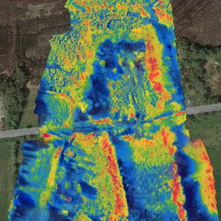
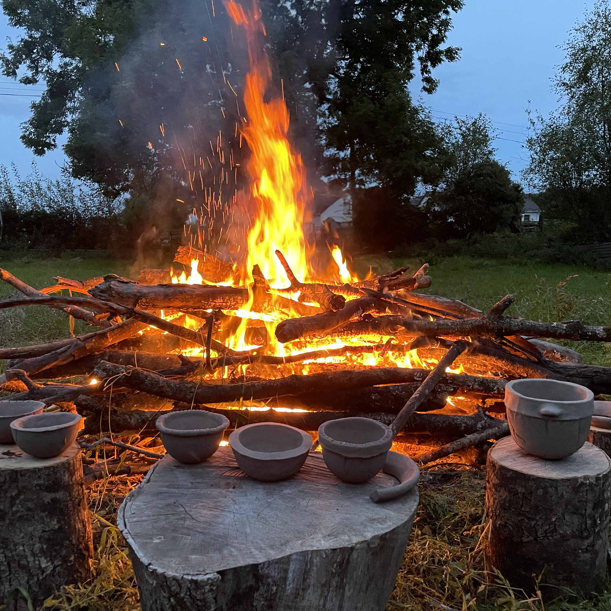
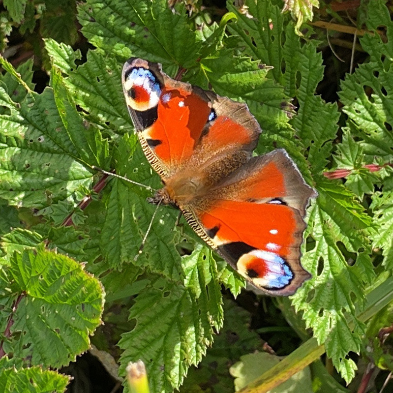
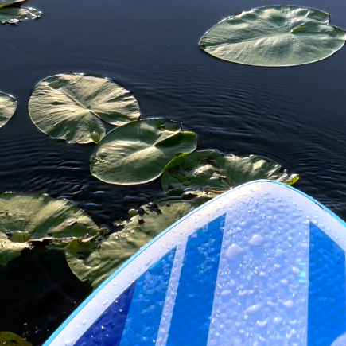

Material Resource is a non-profit, knowledge, nature and art organisation based in the River Shannon Callows Special Area of Conservation(SAC). In central Ireland, North of Lough Derg the River Shannon has a very gentle gradient and in parts regularly floods its banks. (Over the 223km length of the Shannon from Lough Allen to Parteen Weir near Limerick, the river falls only 15m.) The callows is renowned for its wild birds and diverse flora species. The biodiversity of the area is partly protected by the grazing of animals as this prevents the growth of willows and alders encroaching on the callows.
Irish Aviation Authority certified Drone/SUA company On Board Camera Systems (OBCS) completed an aerial survey of both locations of our site. Apart from getting a sense of the extent of flooding we were able to use the survey imagery as a roof inspection and identify the houses's different sized chimney pots. The topographic survey will be used for future land management and planning.
Rivers and lakes from prehistoric times now covered by bog provide the essential muds favourable for brickmaking and roof and floor tile making. A hand-made brick industry thrived in Clonown, South Roscommon in the 19th century and provided bricks for many buildings in Athlone. In Carricknaughton brickmaking was still active until 1924. Using local clays this workshop leads participants through the entire process of digging local clay from the ground, processing it, hand building it and firing ceramic work on site.
Material Resource is located in the River Shannon Callows Special Area of Conservation(SAC). A callow – from the Irish word caladh, meaning river meadow – floods regularly in winter, but typically dries out in summer, when it can be used for pasture or saving hay. However, the Shannon Callows can be under water for anything up to six months of the year, and flooding can occur at any time. Due to this seasonal flooding, the resulting wet grassland area has never been under intensive agriculture. The Shannon Callows, has one of the largest concentrations of breeding waders nationally, with Lapwing, Redshank, Curlew, Sandpiper and Godwit living here. Many species of migrant wildbirds are also frequent visitors while otters, fox and ferret mink are common residents. The low-lying grasslands areas where prolonged flooding and occasional alluvial deposits occurs have a relatively low variety of plant species. However, the higher grassland hay meadows rarely floods and is species-rich. Typical callows species include: Cuckoo Flower, Water Mint, Marsh Bedstraw, Common Sedge, White Clover, Meadow Grass, Marsh Marigold, Creeping Buttercup, Meadowsweet. The presence of small snail shells in the underlying white marl suggests that the callow was laid down at the end of the Ice Age in a freshwater lake.
Push off through lily pads and experience the Callows from the water. Inflatable paddle boards are ideal for river paddle boarding due to their durability and lightness. They can withstand collisions with rocks and hard surfaces reducing the likelihood of damage. Secure your gear on the board with bungee cord. A personal flotation device or a life jacket, a waterproof phone pouch and a leash to ensure you don’t get separated from your paddleboard are all necessary.